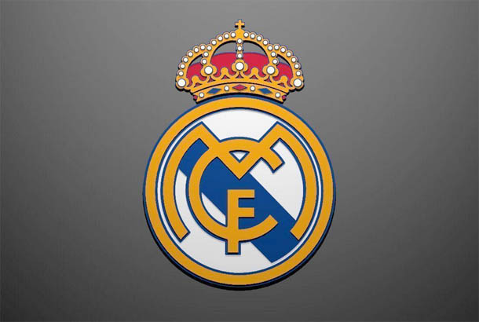

Real Madrid Club de Fútbol adalah klub sepak bola profesional yang berasal dari Madrid, Spanyol. Klub ini didirikan pada tahun 1902 dan dikenal sebagai salah satu klub sepak bola paling sukses dalam sejarah dunia. Real Madrid memiliki jutaan penggemar di seluruh dunia dan dikenal karena prestasi luar biasa di kompetisi domestik maupun internasional.
Real Madrid didirikan pada tanggal 6 Maret 1902 dengan nama Madrid Football Club. Klub ini dibentuk oleh sekelompok pecinta sepak bola di kota Madrid yang ingin mengembangkan olahraga sepak bola di Spanyol.
Pada tahun 1920, Raja Spanyol Alfonso XIII memberikan gelar "Real" yang berarti "Kerajaan". Sejak saat itu klub ini dikenal dengan nama Real Madrid Club de Fútbol dan logo klub ditambahkan mahkota kerajaan.
Real Madrid memainkan pertandingan kandangnya di Stadion Santiago Bernabéu. Stadion ini dibuka pada tahun 1947 dan dinamai berdasarkan presiden legendaris klub, Santiago Bernabéu. Stadion ini merupakan salah satu stadion sepak bola paling terkenal di dunia.
Pada tahun 1950-an, Real Madrid memasuki era keemasan dengan pemain legendaris seperti Alfredo Di Stefano dan Ferenc Puskas. Pada periode ini Real Madrid memenangkan European Cup lima kali berturut-turut dari tahun 1956 hingga 1960. Prestasi ini membuat Real Madrid dikenal sebagai klub terbesar di Eropa.
Pada awal tahun 2000-an, presiden klub Florentino Pérez memperkenalkan kebijakan Galacticos, yaitu membeli pemain bintang dunia seperti Zinedine Zidane, Luis Figo, Ronaldo Nazario, dan David Beckham. Era ini membuat Real Madrid menjadi klub yang sangat populer secara global.